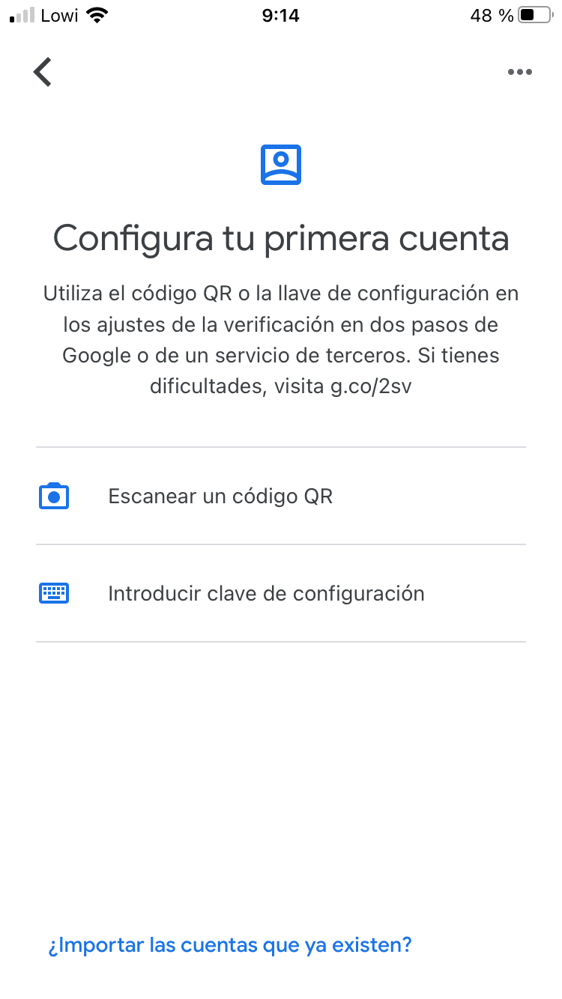

Tarea 1. Autenticación de doble factor por SSH con Google Authenticator
1. Objetivos
Utilizar un sistema de autenticación de doble factor mediante Google Authenticator o apps compatibles como Microsoft Authenticator o Authy en el acceso ssh a un sistema GNU/Linux.
2. Introducción
Google Authenticator es una aplicación que genera contraseñas de un solo uso (OTP, en inglés one-time passwords) para la autenticación de usuarios desarrollada por Google.
Aunque en principio está pensada como segundo factor de autenticación (2FA) para acceder a los servicios de Google, los códigos generados también se pueden utilizar en servicios de terceros. Uno de estos servicios de terceros es el módulo de autenticación conectable (PAM, en inglés Pluggable Authentication Modules) utilizado por los sistemas Linux.
Google Authenticator puede generar códigos de un solo uso utilizando los algoritmos HMAC-Based One-time Password (HOTP) y Time-based One-time Password (TOTP). El algoritmo TOTP se considera más seguro ya que solo es válido para un cierto periodo de tiempo.
3. Preparación
Se necesita:
- Un móvil con la app Google Authenticator, Microsoft Authenticator o Authy instalada.
- Una máquina virtual con Debian/Ubuntu instalado y con el servicio ssh levantado o una máquina virtual con Windows con la app Putty o el comando ssh integrado.
- Para este caso, se utiliza un Ubuntu Desktop 20.04 LTS con nombre goofy e ip 192.168.0.28/24.
La tutorización de la tarea se desarrolla para Google Authenticator. En caso de usar otra app compatible, consultar la ayuda de la app.

Google Authenticator App Store.
4. Enunciado
Paso 1. En primer lugar, hay que asegurase que la máquina virtual Linux tiene el servicio sshd levantado, que ningún firewall esté cortando el puerto 22/tcp (sshd) y que haya visibilidad entre la máquina anfitrión y la máquina virtual. Se puede configurar la máquina virtual en modo puente con la tarjeta de red del anfitrión o bien en modo red solo-anfitrión pero en ambos casos hay que asegurarse que ambas máquinas puedan verse por red mediante un ping y un ssh. Para el caso de Windows: desde la línea de comandos de Windows 10 existe un cliente ssh integrado pero en caso de no tenerlo habilitado se puede habilitar como característica de Windows o bien se puede descargar un cliente ssh para Windows como Putty.
Paso 2. En una shell de Linux, instala el paquete libpam-google-authenticator en el sistema mediante el comando (como root o usando sudo):
root@goofy:/home/jcrequena# apt-get install libpam-google-authenticator
Paso 3. Una vez instalado google authenticator en Linux, desde la línea de comandos y con el usuario que se desee, se va a utilizar la autenticación 2FA y para ello, hay que ejecutar la utilidad google-authenticator:
jcrequena@goofy:~$ # google-authenticator
Paso 4. La aplicación hace una serie de preguntas que se describen a continuación.
Google Authenticator soporta dos tipos de algoritmos para generar códigos:
- HMAC-based One-time Password (HOTP): cuyo algoritmo genera un código válido hasta que el usuario lo ingrese.
- Time-based One-time Password (TOTP): este algoritmo basado en el tiempo genera un código normalmente cada treinta segundos, de esta manera es más seguro ya que pasado este tiempo preestablecido el código
quedará caducado generando uno nuevo.
Para este caso, se elige la opción que se genere un QR con el algoritmo TOTP o basado en el tiempo, por lo que a la pregunta: Do you want authentication tokens to be time-based (y/n): respondemos y.
La aplicación genera un secret key (clave secreta) y un QR.
Abre la app Google Authenticator, y si es la 1ª vez, te aparece una pantalla para configurar la primera cuenta y sino, pulsa el botón + para añadir una cuenta y escanea el QR (o también puedes meter a mano la clave secreta). Automáticamente te aparecerá en la APP el usuario y equipo para el que has activado la autenticación TOTP y con la clave cambiando cada 30 segundos:
|  |
Alternativamente, se podría utilizar un software de terceros que nos permita leer la configuración de Google Authenticator. De esta manera podemos prescindir de un dispositivo móvil para cargar dicha configuración. Un ejemplo de estos softwares son: WinAuth y Authy.
Paso 5. A partir de aquí hay que seguir respondiendo a más preguntas que realiza el asistente desde la consola de Linux:
- Enter code from app (-1 to skip): -1
- Do you want me to update your "/home/jcrequena/.google_authenticator" file? (y/n) y
- Do you want to disallow multiple uses of the same authentication token? This restricts you to one login about every 30s, but it increases your chances to notice or even prevent man-in-the-middle attacks (y/n): y
- By default, a new token is generated every 30 seconds by the mobile app ... (texto omitido)… Do you want to do so? (y/n): n
- If the computer that you are logging into isn't hardened against brute-force login attempts, you can enable rate-limiting for the authentication module. By default, this limits attackers to no more than 3 login attempts every 30s. Do you want to enable rate-limiting? (y/n): y
A partir de aquí ya se habrá creado en el home el fichero .google_authenticator que se puede visualizar con un editor de textos o con cat.
Paso 6. A continuación hay que configurar la autenticación PAM (Pluggable Authentication Module) en ssh para que use google_authenticator.
PAM es un mecanismo de autenticación flexible que permite independizar las aplicaciones y servicios de un sistema GNU/Linux del proceso de identificación. Permite configurar distintos sistemas de autenticación, sesión y cambio de contraseñas y conectarlos a los servicios que queramos, como por ejemplo el servicio login (que permite acceder al sistema desde una consola), el servicio sshd (que permite acceder via red mediante SSH) o el servicio web de apache, por citar sólo unos pocos ejemplos.
Como root, hay que editar el fichero /etc/pam.d/sshd y comentar la linea @include common-auth y añadir dos líneas más, quedaría de la siguiente manera:
#@include common-auth
auth requisite pam_unix.so nullok_secure
auth requisite pam_google_authenticator.so
En la ayuda (man pam_unix) se puede ver el significado del parámetro nullok_secure que se le pasa al módulo pam_unix.
Paso 7. A continuación, hay que editar el fichero /etc/ssh/sshd_config y cambiar esta línea y poner yes en lugar de n:
ChallengeResponseAuthentication yes
Una vez guardado los cambios del fichero, hay que reiniciar el servicio como root (o con sudo) con:
jcrequena@goofy:/$ sudo systemctl restart sshd
Paso 8. Ahora toca comprobar que desde un terminal desde otro equipo (por ejemplo desde el propio anfitrión) se puede hacer ssh al usuario y máquina Linux (compruebar su ip primero). En primer lugar solicitará el password de la cuenta y después el código temporal de Google Authenticator:
jc@jc-Latitude-E6430:~$ ssh jcrequena@192.168.0.28
Password: *****
Verification code:******
Paso 9. Con el modulo pam_succeed_if se pueden aplicar expresiones condicionales (consultar man pam_succeed_if) como por ejemplo que ha determinados grupos de usuarios no les aplique el 2FA, como en el siguiente ejemplo en el /etc/pam.d/sshd, donde a los usuarios del grupo invitados no les pide el código de Google Authenticator:
auth requisite pam_unix.so nullok_secure
auth [success=done default=ignore] pam_succeed_if.so user ingroup invitados
auth requisite pam_google_authenticator.so
En este paso, tienes que proponer una expresión condicional a aplicar para el contexto de tu proyecto, para ello, puedes crear un usuario que pertenezca a un grupo que tendrás que crear primero y que haga referencia a un departamento de tu subsistema. Los comandos para crear usuarios y grupo son:
Crear grupo: sudo groupadd <Nombre_grupo>
Crear usuario: sudo adduser <Nombre_usuario>
Añadir usuario a grupo: sudo usermod -aG <Nombre_grupo> <Nombre_usuario>
Nota: La opción -a tiene que ser utilizada siempre junto con la opción -G, y lo que indica es que añades al usuario a grupos suplementarios.
5. Entrega
Documento pdf que contenga:
- Portada: Título de la tarea y nombre y apellidos.
- Capítulo 1. Descripción gráfica y textual del proceso realizado. En el paso 9, tienes que proponer una expresión condicional a aplicar para el contexto de tu proyecto a un usuario que pertenezca a un grupo (departamento).
6. Recursos
Obra publicada con Licencia Creative Commons Reconocimiento No comercial Compartir igual 4.0